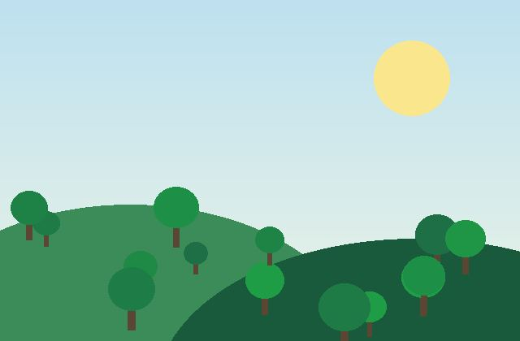
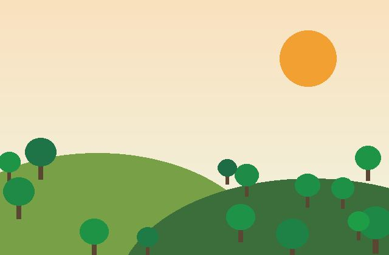
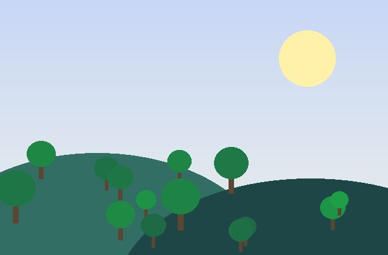

Meio ambiente
Bosque do Jardim Ângela
Plantio e manutenção de 3 hectares de mata atlântica urbana.
72% de R$ 40.000 arrecadadosTrês frentes de trabalho, todas com prestação de contas pública.

Plantio e manutenção de 3 hectares de mata atlântica urbana.
72% de R$ 40.000 arrecadados
Hortas coletivas que abastecem 120 famílias com alimentos frescos.
45% de R$ 25.000 arrecadados
Oficinas semanais de ciência e meio ambiente para crianças de 7 a 12 anos.
88% de R$ 18.000 arrecadadosPrecisamos de pessoas para plantio aos sábados, apoio nas oficinas e comunicação. Não é preciso experiência: oferecemos treinamento e certificado digital de participação.